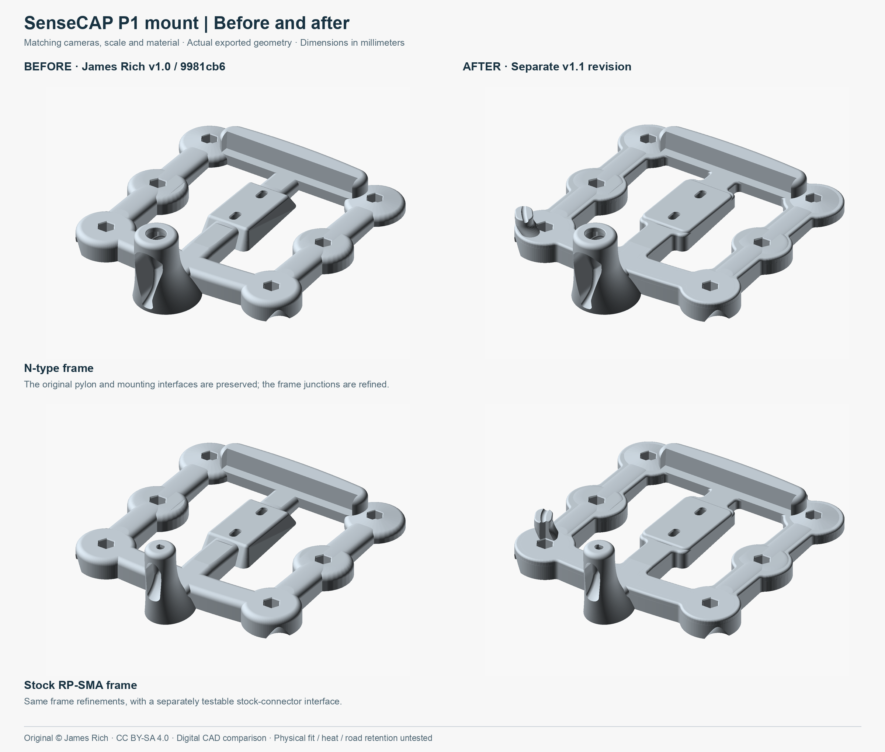
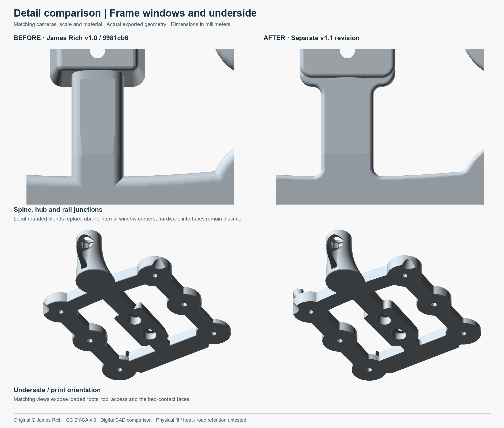
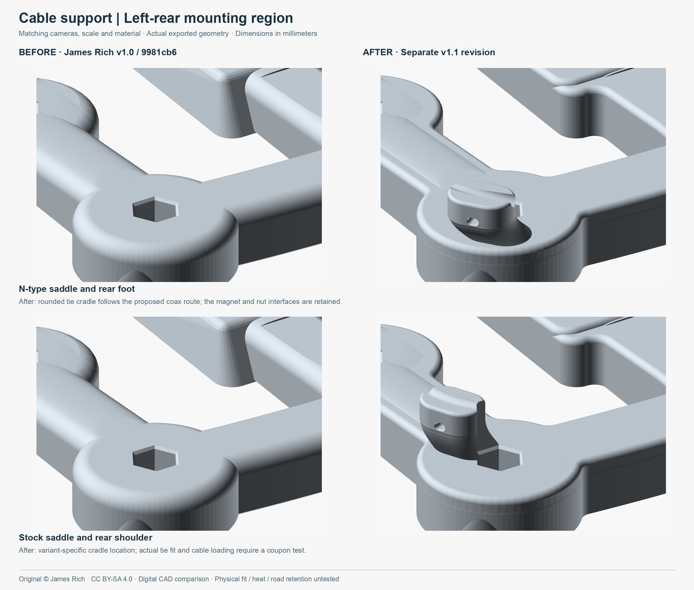
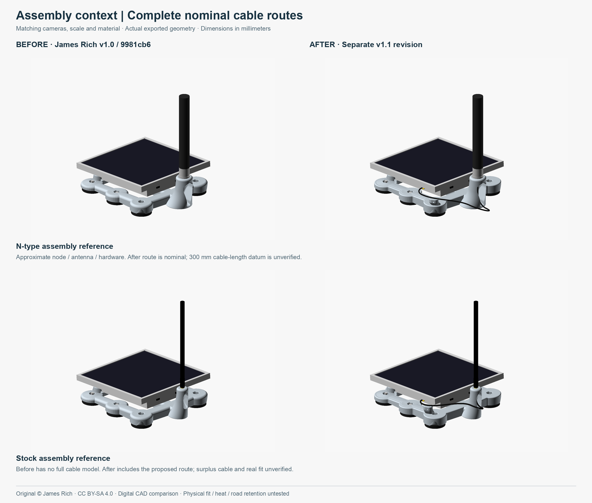
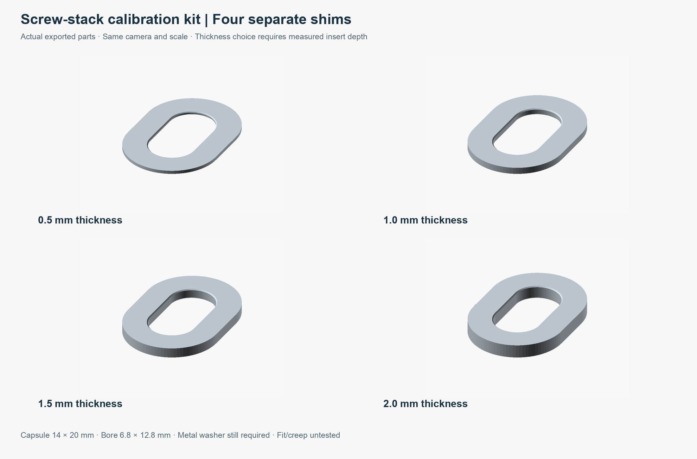

SEPARATE VERSION · OCTOBER 28, 2026 · DIGITAL PROTOTYPE
SenseCAP P1 mount — v1.1
Compared with the v1.0 baseline at 9981cb6, this proposed revision implements the rounded frame transitions, cable restraint/routing, adjustable screw shims, stock-pylon coupon and export cleanup. All comparisons below show actual final exported geometry with matched cameras, scale and material.
Editable main model · Editable assembly helpers · Revision notes · Final build evidence

What changed
- R4 frame-window blends and separate R2 top-edge relief. The spine, hub and rail junctions now have rounded concave transitions. The original node seat plane, mounting holes, slot travel and six magnet datums remain.
- Integrated cable-tie saddle. A broad rounded root grows from the left rear foot/rail shoulder. The open cradle follows each variant’s cable route, with a rounded 3.4 × 2.2 tie passage and entry flare.
- Complete nominal coax routes. Both models include reference routes and connector/tool envelopes. Free-cable centerlines are approximately 288.37 mm N-type and 211.08 mm stock, with source-sampled minimum bend radii 25/15 mm. Actual cable-length datums and stock surplus slack remain unverified.
- Four optional calibration shims. The 0.5/1/1.5/2 mm capsule shims preserve screw travel. Insert depths and washer thicknesses remain unmeasured, so no shim thickness is selected and the original 2 mm screw-bearing web remains.
- Stock connector entry and fit coupon. A 0.25 mm exterior D-flat lead-in preserves 2.25 mm of keyed roof. The stock pylon now has a separate full-height coupon.
- Stable downstream exports. Strict float32 normalization and bounded correction of precision-sized degenerate edges eliminate the earlier facet-loss problem. New additive-blend tessellation is reduced at 0.001 mm tolerance before mating cuts; the final model is not cosmetically smoothed.


Assembly and calibration

Reference hardware and node dimensions are partly assumed/photo-derived. Before has no full cable route. After displays the proposed route, not a measured cable installation. These renders do not establish printed finish, operating force or road retention.

Stack order is screw head → metal flat washer → selected printed shim → original bearing web → node insert. Choose a shim only after measuring usable insert depth, screw length, washer thickness and required engagement. The supplied calculator reports not checked while those values are unknown. Hardware and calibration notes.
Files and print studies
| File | Type / configuration | Estimate / limits |
|---|
| N-type fit prototype | Configured, sliced Bambu Studio project | ~8 h 34 min · 330 g. Reopens as one manifold part; all 111,612 triangles retained. Final slice log has no clipping diagnostic. |
| Stock fit prototype | Configured, sliced Bambu Studio project | ~8 h 16 min · 312 g. Reopens as one manifold part; all 103,392 triangles retained. The stock-only preserved-fill process workaround clears the clipping diagnostic. |
| Four-shim calibration kit | Geometry-only 3MF; four named solids in mm | No printer/material settings or slicing. Bambu reopening confirms four manifold parts at their intended thicknesses. Optional, no service stack selected. |
| Stock-pylon coupon · N-type pylon coupon · N-type foot/cradle coupon · Seat coupon | Final STL geometry, mm; editable source supplied | Fit and support-cleanup samples. The left-rear coupon includes the complete N-type saddle. Stock saddle geometry is in the stock full-frame project. Print relevant coupons before a full frame. |
| N-type STL · Stock STL | Final binary STL, matching build hashes | 200 × 241.5 × 68 / 200 × 231.6 × 68 mm. Solid volumes 415.447 / 398.815 cm³; solid volume is not slicer material use. |
Fit/support prototypes. Bambu Studio 02.08.02.61, A1 0.4 mm, Textured PEI, provisional Bambu PETG HF, feet down, 0.2 mm model layers, six walls, 40% infill, 1.2 mm top/bottom skins, 4 mm brim, automatic normal supports. Actual spool/color/AMS lite slot unconfirmed. The original ASA/P1S service-material choice is not qualified by these A1/PETG studies. Physical roof heat, creep and road retention remain untested.
The corrected A1-supported projects preserve settings, material assignment and embedded toolpaths. Earlier CLI exports omitted the retained-override metadata, which allowed Bambu Studio’s interface to reset supports and other custom values to Standard defaults. GUI import fix · Metadata verification · GUI save/reopen verification. Both corrected projects now retain six walls, 40% infill, 1.2 mm skins and support enabled in the interface; fresh GUI slices clear the floating-cantilever warning. Both have timelapse compatibility notices. The stock clipping diagnostic is now resolved for this project: per-segment floating classification is bypassed and the whole floating-shell role runs at an absolute 50 mm/s, preserving the original 0.42 mm fill width. Three independent selected-profile slices and a self-contained project re-slice are clear. Fix details and tradeoffs · Final diagnostic checks. Saved-project verification · Exact settings and reproduction · N-type actual paths · Stock actual paths. The path sheets include the new tie-eye roof and cradle, G2/G3 arcs and complete previous-layer paths; they do not prove exhaustive bridge anchoring.
The stock fill fix retains all source/STL hashes and the original N-type slice unchanged. The subsequent GUI-import fix changes only retained-override metadata in both delivered projects; geometry, effective settings and embedded toolpaths remain unchanged. All 340 stock model layers were checked: no newly omitted components above 0.05 mm²; the same three 0.095–0.126 mm-wide sub-nozzle remnants remain. Preserved-fill comparison covers all 249 solid/floating-bearing levels; exact path equivalence confirms 518,135 model deposition paths are retained when the conservative speed is applied. Component checks · Path checks. These digital checks do not establish physical extrusion or strength.
Opening and assembly audit
| Feature | Contour / entry / root | Clearance and remaining material | Status and evidence |
|---|
| Two connected frame windows, front/rear sectors | R4 concave outline blends, R2 upper edge, rounded hub-local transition | Existing seat, node and hardware keepouts applied after additions. Native sections replace 88–91° turns with ordinary ~5.63° tessellation turns; sampled native arc R4.010 ±0.0053 fit residual. | Nominal contour corrected. Final-export section comparison; high-Z inclined roof section transition distinguished from through-wall corners. |
| Six stud bores / six nut pockets | Original round bores/lead-ins; functional hex outlines intentionally retained | Nominal foot web 3.03; source stud clearance 0.225 radial. Actual stud/nut tolerances and roof contact unmeasured. | Geometry preserved; physical fit/retention not checked. |
| Two shank slots / two underside access mouths | Original capsule slots, entry bevel and planar bearing web preserved | Final Ø15 tool sweeps at −3/0/+3 travel pass. Optional shims keep the 6 mm slot travel. Actual clamp engagement remains unknown. | Nominal access pass; screw-stack/retention not checked. |
| Both rear finger scoops | Original curved outlines and lower foot surfaces retained | Strict original grip overhang check retained at/below Z18. New tie-eye roof above that height measured separately. | Digital geometry checks pass; actual peel force/finger access not checked. |
| N-type bore, rear chamber and hardware throat | Original round lead-in, rounded recess and functional hex stops | Final bore gauges, hardware entry/lift, nut capture and sampled pylon walls pass; minimum sampled radial wall 4.489. | Nominal geometry pass. Hardware tolerance/torque/retention not checked. |
| Stock D-flat bore, body pocket and rear chamber | Functional D-flat retained; 0.25 exterior relief; rounded chamber | Final D-flat gauge and body/washer insertion sweep pass. 2.25 keyed roof below relief; sampled radial wall minimum 5.290. | Nominal geometry pass; photo-derived hardware needs the new coupon. |
| New tie eye and open cable cradle | R1.1 capsule eye, 0.35 entry flare, rounded body/head, broad lofted root | Complete 2.5 × 1.5 tie sweep passes in final frames. Sampled central bearing webs 3.063 N / 2.930 stock in 169 columns. Physical cable clears. A 0.9999 radial keepout is clear; exact 1.0 has only ~0.00004 mm³ numerical boundary overlap, recorded separately. | Nominal contour/insertion pass to 0.0001 export allowance. Actual tie threading, clamp force, tear/creep and support cleanup not checked. |
| Shim outer profiles and bores | Capsule outlines, separate short bore entry relief; flat bearing faces intentional | 14 × 20 outside, 6.8 × 12.8 bore; 1 mm nominal recess perimeter clearance. Four individual valid solids and reopened geometry-only 3MF. | Digital geometry pass; selected stack, washer contact and printed thickness not checked. |
Final complete cable keepouts clear the nominal node at all three slot positions. The plug and a hypothetical 2.5 mm thin open-ended wrench clear both frame and node. A long generic Ø15 tool cylinder overlaps the approximate node skirt by 8.591 mm³; actual wrench dimensions and motion must be verified. Guarded final-export assembly results records both strict raw intersections and the export-tolerance probes.
Stock saddle clearance exception: its inboard face is intentionally truncated by the original hex nut-pocket cut. This flat relief and its functional corners preserve the magnet-nut installation/antirotation envelope. The final tie sweeps and sampled saddle webs above were checked after this cut; actual nut/tool handling remains a coupon test. The exception does not apply to the cable mouth or tie-eye outline.
Independent validation status
| Area | Result | Scope |
|---|
| Usability review | Not checked overall | Nominal route, access, insertion and corner-release workflow reviewed. Actual hardware, tool motion, comfort, clamping and removal force remain untested. |
| Aesthetic review | Pass — digital scope | Matched final-geometry views show rounded window transitions, coherent broad roots and integrated restraint. Printed finish not inspected. |
| Opening contours | Not checked overall | The known sharp-window issue is corrected; nominal treatments, sweeps and material sections are recorded above. Unknown hardware tolerances and real seating/retention prevent an overall fit-qualified pass. |
| CAD | Not checked overall | Native construction, eight single-solid exports, finite/nonzero triangles, exact edge topology, winding/volume, bounds, nominal interference and sampled roots pass. Full tolerance-qualified assembly, global thickness and structural/load performance remain unresolved. |
| Export | Pass — delivered geometry/configuration scope | All final STL boundaries reopened and checked. Both sliced Bambu projects reopen with matching geometry, settings and embedded toolpaths; shim 3MF reopens with four named solids. No STEP: editable OpenSCAD CSG is supplied. |
| Slicer | Not checked overall | Both slice and persist; stock diagnostic cleared, first-layer/screw/pylon/saddle paths inspected, all 340 stock layer components compared and solid-fill preservation checked. Full physical support/bridge acceptance remains untested. |
| Physical testing | Not checked | No print, roof-contact, heat/UV/creep, torque, fatigue, wind/braking/impact, magnet-retention or driving test performed. |
Remaining measurements and tests
Test the relevant coupons first: hardware entry, clamp-before-bottoming, engagement, tie threading and support removal. Measure the purchased cable’s useful length and connectors, then check routing and slack on the actual node. Verify all six roof contact patches without rocking before changing foot heights. Establish service temperature and load criteria, then test sustained load, thermal cycling and repeated corner removal. A secondary tether needs its actual path, anchor and load specification; no untested anchor or height correction was invented.
Reproduce geometry with tools/build_models.py and the recorded OpenSCAD 2026.10.27 version; dependencies are pinned in tools/requirements-v11.txt. Native source/version fingerprints protect cache/frame reuse; final collision and export probes are rerun. The earlier full native source checks passed; the final run reused those same native frame exports after correcting coupon-coordinate feature classification. Final build log · Construction details and exceptions.